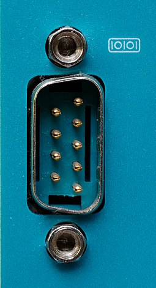

Un puerto serie o puerto en serie es una interfaz de comunicaciones de datos digitales, frecuentemente utilizado por computadoras y periféricos, donde la información es transmitida de forma secuencial, bit a bit, enviando un solo bit a la vez;1 en contraste con el puerto paralelo que envía varios bits simultáneamente.1 A lo largo de la mayor parte de la historia de las computadoras personales, los datos se han transferido a través de puertos seriales a dispositivos como módems, terminales, varios periféricos y directamente entre computadoras.nota 1
 Volver